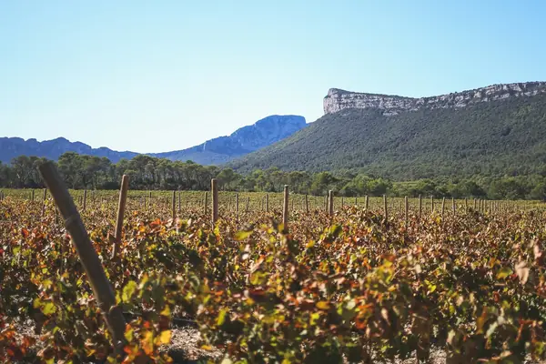

Home › Grapes › Garnacha / Grenache
Garnacha / Grenache grape

Photo: Morgane Le Breton on Unsplash
Garnacha / Grenache is a red grape known for strawberry, cherry, spice. Its best-known homes are Spain, Rhône, Sardinia.
Origin and history
Most likely from Aragon in north-east Spain, then spread through the Crown of Aragon to Sardinia, Roussillon and the southern Rhône.
Where it grows
Spain (Priorat, Campo de Borja, Calatayud, Cariñena, Navarra, Rioja), the southern Rhône (Châteauneuf-du-Pape, Gigondas), Roussillon, Sardinia and McLaren Vale and Barossa in Australia.
Structure
Medium to full body, light to medium colour, high alcohol, moderate to low acidity and soft tannins.
Aromas, young and aged
Young: strawberry, raspberry, red cherry, white pepper and dried herbs (garrigue). With age: leather, tar, toffee and dried fruit.
Ageing
Most best within 2–6 years; old-vine Priorat and Châteauneuf can age 15–25.
Also known as
Garnacha Tinta, Grenache Noir, Cannonau (Sardinia), Garnatxa (Catalonia).
Good to know
It makes Roussillon's fortified sweet wines Banyuls and Maury, and is the 'G' in Australian GSM blends with Syrah and Mourvèdre.
Wine regions for Garnacha / Grenache
Garnacha / Grenache wines to try
Real bottles from The Wine Library.
E. Guigal Côtes du Rhône Rouge
Rhône Valley · Côtes du Rhône · Syrah / Shiraz, Garnacha / Grenache, Mourvèdre
Generous and peppery: dark berries, spice and soft tannins.
Food: Sausages, cassoulet, pizza
Château de Beaucastel Châteauneuf-du-Pape Rouge
Rhône Valley · Châteauneuf-du-Pape · Mourvèdre, Garnacha / Grenache, Syrah / Shiraz
Deep and savoury: black fruit, garrigue herbs, leather and spice.
Food: Game, slow-cooked lamb
La Rioja Alta Viña Ardanza Reserva
Rioja · Rioja Alta · Tempranillo, Garnacha / Grenache
Classic oak-aged Rioja: strawberry, vanilla, leather and spice.
Food: Roast lamb, chorizo
Álvaro Palacios L'Ermita
Priorat · Garnacha / Grenache, Carignan
Old-vine Garnacha on slate: dark cherry, herbs and a mineral core.
Food: Lamb, grilled meats
Celler de Capçanes Mas Donís
Montsant · Garnacha / Grenache, Syrah / Shiraz
Juicy, sun-warmed Garnacha with ripe cherry, herbs and soft tannins. Easy and generous.
Food: Pizza, grilled sausages, lamb chops
Bodegas Borsao Borsao Tres Picos
Campo de Borja · Garnacha / Grenache
Rich, velvety Garnacha from Moncayo foothills, raspberry, kirsch and a touch of spice.
Food: Grilled lamb, roast vegetables, chorizo
Bodegas Ateca Atteca Old Vines
Calatayud · Garnacha / Grenache
Old-vine high-altitude Garnacha, dark cherry, liquorice and a fresh mineral lift.
Food: Braised beef, lamb skewers, hard cheese
Bernabeleva Navaherreros
Vinos de Madrid · San Martín de Valdeiglesias · Garnacha / Grenache
Elegant granite-grown Garnacha from the Gredos mountains, red fruit, herbs and fine tannins.
Food: Roast pork, game birds, mushroom dishes
Jiménez-Landi Sotorrondero
Méntrida · Syrah / Shiraz, Garnacha / Grenache
Ripe black fruit and pepper from granite hills near Toledo, polished by gentle oak.
Food: Roast lamb, venison stew, aged cheese
Familia Torres Grans Muralles
Conca de Barberà · Garnacha / Grenache, Carignan, Monastrell
Torres flagship from old Poblet vineyards with native varieties: dark fruit, herbs, minerals and great depth.
Food: Roast suckling lamb, game pie, truffled dishes
Château d'Aqueria Tavel
Rhône Valley · Tavel · Garnacha / Grenache, Cinsault, Clairette
Deep, structured rosé with redcurrant, strawberry and spice; a rosé for the table.
Food: Bouillabaisse, grilled lamb, paella
Castillo Perelada Garnatxa de l'Empordà
Traditional sweet Garnatxa, amber and nutty with raisin, fig and toffee notes.
Food: Catalan cream, dried fruit, blue cheese
Similar red grapes
Explore all grapes in the interactive guide
The Wine Reference newsletter
New wines, stories and career guides, one email a week at most.
Over 18s only. Unsubscribe any time with one click. Your email is stored securely by Kit and never shared.
Support The Wine Reference
This guide is free, with no paywall. If it helped you choose a bottle, you can buy me a glass and keep it growing.
🍷 Buy me a glass